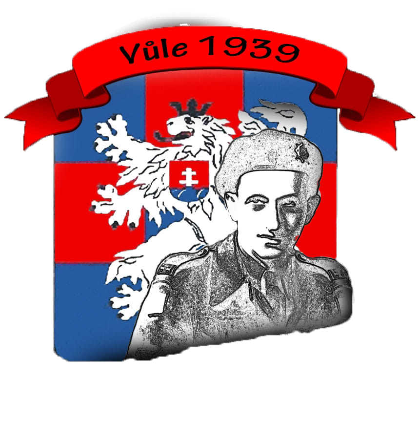

Ačkoliv byl spolek Vůle 1939 z.s. zapsán do spolkového rejstříku až v prosinci 2018, historie naší činnosti sahá o mnoho let zpět.
Zakladatel spolku, Milan Grossmann, strávil 8 let svého života pátráním a bádáním v nejrůznějších archivech, než získal veškeré informace, které nás přiměly založit spolek a začít realizovat projekt AMELIE 1939 aneb Po stopách Jakuba Grossmanna.
